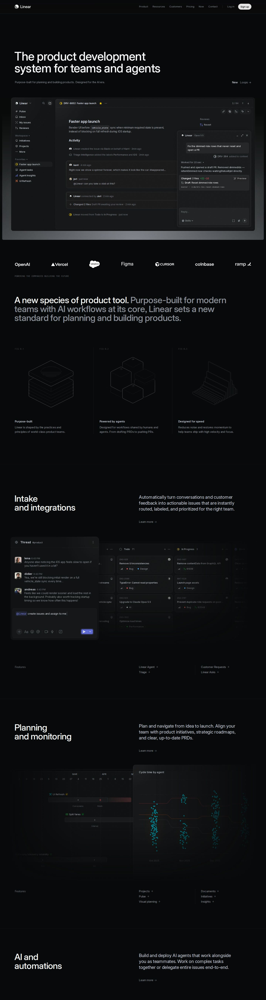
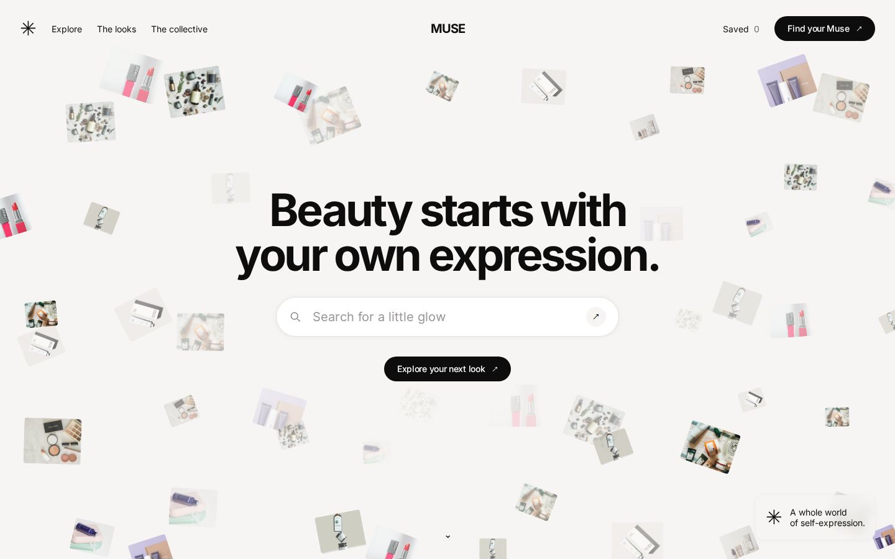

<!doctype html>
<html lang="en">
<head>
<meta charset="utf-8">
<title>relume · film v2</title>
<link rel="preconnect" href="https://fonts.googleapis.com">
<link rel="preconnect" href="https://fonts.gstatic.com" crossorigin>
<link href="https://fonts.googleapis.com/css2?family=Bricolage+Grotesque:opsz,wdth,wght@12..96,75..100,200..800&family=Doto:wght@500..900&family=Martian+Mono:wdth,wght@75..112.5,300..600&family=Instrument+Serif:ital@0;1&display=swap" rel="stylesheet">
<style>
/* relume film v2: voice-led, every frame a function of t. Motion: springs, a moving camera on every shot, depth. */
:root { --ink: #0c0b0d; --paper: #f2efe8; --volt: #c0f63c; --dim: #8a838f;
  --display: "Bricolage Grotesque", sans-serif; --mono: "Martian Mono", monospace; --pixel: "Doto", monospace; --serif: "Instrument Serif", serif; }
* { box-sizing: border-box; margin: 0; }
html, body { width: 1920px; height: 1080px; overflow: hidden; background: #000; }
#stage { position: relative; width: 1920px; height: 1080px; overflow: hidden; background: var(--ink); color: var(--paper); font-family: var(--display); }
.shot { position: absolute; inset: 0; display: none; overflow: hidden; }
.cam { position: absolute; inset: 0; transform-style: preserve-3d; will-change: transform; }
.abs { position: absolute; }
canvas.full { position: absolute; inset: 0; width: 1920px; height: 1080px; }
/* masked word reveal: each word sits in a clipping box and rides up into it */
.line { position: absolute; display: flex; gap: 0.24em; white-space: nowrap; }
.wd { display: inline-block; overflow: hidden; padding: 0.06em 0.02em 0.14em; margin: -0.06em -0.02em -0.14em; }
.wd > span { display: inline-block; will-change: transform; }
.tile { position: absolute; width: 640px; height: 400px; border-radius: 14px; overflow: hidden; background: #000; box-shadow: 0 40px 80px rgb(0 0 0 / 0.55); }
.tile img { width: 100%; height: 100%; object-fit: cover; object-position: top left; display: block; }
.glass { background: rgb(28 25 30 / 0.72); backdrop-filter: blur(18px); box-shadow: inset 0 0 0 1px rgb(255 255 255 / 0.08), 0 30px 80px rgb(0 0 0 / 0.5); }
.cap { position: absolute; left: 0; right: 0; bottom: 70px; text-align: center; font: 500 34px/1.3 var(--display); letter-spacing: -0.01em; }
.cap span { transition: none; }
#grain { position: absolute; inset: 0; pointer-events: none; mix-blend-mode: overlay; opacity: 0.2; }
#vig { position: absolute; inset: 0; pointer-events: none; background: radial-gradient(120% 95% at 50% 50%, transparent 58%, rgb(0 0 0 / 0.6)); }
</style>
<script src="vo/brian.js"></script>
</head>
<body>
<div id="stage">
  <div class="shot" id="S-hook"><canvas class="full" id="hookC" width="1920" height="1080"></canvas></div>
  <div class="shot" id="S-feel" style="perspective:1700px"><div class="cam" id="feelCam"></div><div id="feelType" class="abs" style="inset:0"></div></div>
  <div class="shot" id="S-moves"><div class="cam" id="movesCam"></div><canvas class="full" id="movesC" width="1920" height="1080"></canvas><div id="movesType" class="abs" style="inset:0"></div></div>
  <div class="shot" id="S-type"><canvas class="full" id="typeC" width="1920" height="1080"></canvas><div id="typeAa" class="abs" style="inset:0"></div><div id="typeCap" class="abs" style="inset:0"></div></div>
  <div class="shot" id="S-colour"><div class="cam" id="colourCam"></div><canvas class="full" id="colourC" width="1920" height="1080"></canvas><div id="colourType" class="abs" style="inset:0"></div></div>
  <div class="shot" id="S-prompt" style="perspective:1600px"><canvas class="full" id="promptC" width="1920" height="1080"></canvas><div id="promptBox" class="abs"></div><div id="promptType" class="abs" style="inset:0"></div></div>
  <div class="shot" id="S-title"><canvas class="full" id="titleC" width="1920" height="1080"></canvas><div id="titleType" class="abs" style="inset:0"></div></div>
  <div class="shot" id="S-visit" style="perspective:1800px"><canvas class="full" id="visitBg" width="1920" height="1080"></canvas><div class="cam" id="visitCam"></div><canvas class="full" id="visitC" width="1920" height="1080"></canvas><div id="visitType" class="abs" style="inset:0"></div></div>
  <div class="shot" id="S-lang" style="perspective:1600px"><canvas class="full" id="langC" width="1920" height="1080"></canvas><div class="cam" id="langCam"></div><div id="langType" class="abs" style="inset:0"></div></div>
  <div class="shot" id="S-tokens"><canvas class="full" id="tokC" width="1920" height="1080"></canvas></div>
  <div class="shot" id="S-build" style="perspective:1700px"><canvas class="full" id="buildBg" width="1920" height="1080"></canvas><div class="cam" id="buildCam"></div><div id="buildType" class="abs" style="inset:0"></div></div>
  <div class="shot" id="S-pairs"><div id="pairsWrap" class="abs" style="inset:0"></div><canvas class="full" id="pairsC" width="1920" height="1080"></canvas></div>
  <div class="shot" id="S-check" style="perspective:1800px"><canvas class="full" id="checkBg" width="1920" height="1080"></canvas><div class="cam" id="checkCam"></div><div id="checkType" class="abs" style="inset:0"></div></div>
  <div class="shot" id="S-tag"><canvas class="full" id="tagC" width="1920" height="1080"></canvas><div id="tagType" class="abs" style="inset:0"></div></div>
  <div class="shot" id="S-end"><canvas class="full" id="endC" width="1920" height="1080"></canvas><div id="endType" class="abs" style="inset:0"></div></div>
  <canvas id="grain" width="960" height="540"></canvas>
  <div id="vig"></div>
</div>
<script>
// ================================================================ toolkit
const $ = (id) => document.getElementById(id);
const clamp = (v, a = 0, c = 1) => Math.min(c, Math.max(a, v));
const lerp = (a, c, k) => a + (c - a) * k;
const prog = (t, a, c) => clamp((t - a) / (c - a));
const out3 = (k) => 1 - Math.pow(1 - k, 3), out5 = (k) => 1 - Math.pow(1 - k, 5), inOut3 = (k) => (k < 0.5 ? 4 * k * k * k : 1 - Math.pow(-2 * k + 2, 3) / 2);
const inOut5 = (k) => (k < 0.5 ? 16 * k ** 5 : 1 - Math.pow(-2 * k + 2, 5) / 2), in3 = (k) => k * k * k;
// damped spring step response: 0 → 1 with overshoot (stiffness k, damping c)
const spring = (t, k = 180, c = 16) => { if (t <= 0) return 0; const w = Math.sqrt(k), z = c / (2 * w); if (z < 1) { const wd = w * Math.sqrt(1 - z * z); return 1 - Math.exp(-z * w * t) * (Math.cos(wd * t) + (z * w / wd) * Math.sin(wd * t)); } return 1 - Math.exp(-w * t) * (1 + w * t); };
const rng = (seed) => () => { seed |= 0; seed = (seed + 0x6d2b79f5) | 0; let x = Math.imul(seed ^ (seed >>> 15), 1 | seed); x = (x + Math.imul(x ^ (x >>> 7), 61 | x)) ^ x; return ((x ^ (x >>> 14)) >>> 0) / 4294967296; };
// smooth 1D noise for camera drift
const hash = (n) => { const s = Math.sin(n * 127.1) * 43758.5453; return s - Math.floor(s); };
const noise = (x) => { const i = Math.floor(x), f = x - i, u = f * f * (3 - 2 * f); return lerp(hash(i), hash(i + 1), u) * 2 - 1; };
const C = { ink: '#0c0b0d', paper: '#f2efe8', volt: '#c0f63c', salmon: '#ee9070', sky: '#3fa0e8', plum: '#9c78a8', lilac: '#f4dcf8', sun: '#f5e14a', dim: '#8a838f' };
const B4 = [0, 8, 2, 10, 12, 4, 14, 6, 3, 11, 1, 9, 15, 7, 13, 5].map((v) => v / 16);
const R_PIX = ['11011110', '11111111', '11100011', '11000000', '11000000', '11000000', '11000000', '11000000'];
const SITES = ['linear', 'stripe', 'vercel', 'resend', 'cosmos', 'lenis'];
const img = (s) => { const i = new Image(); i.src = s; return i; };
const HERO = Object.fromEntries(SITES.map((s) => [s, img(`assets/sites/${s}-src-hero.jpg`)]));
const ctx = (id) => $(id).getContext('2d');

// ================================================================ voice timing
const VO_AT = 1.5;
const WORDS = (window.VO?.words || []).map((w) => ({ ...w, k: w.w.toLowerCase().replace(/[^a-z']/g, ''), t: w.start + VO_AT, e: w.end + VO_AT }));
/** film time of the nth occurrence of a word (or the first word of a phrase) */
const at = (phrase, nth = 0) => { const ks = phrase.toLowerCase().split(/\s+/).map((k) => k.replace(/[^a-z']/g, '')); let seen = 0; for (let i = 0; i + ks.length <= WORDS.length; i++) if (ks.every((k, j) => WORDS[i + j].k === k)) { if (seen++ === nth) return WORDS[i].t; } return null; };
const endOf = (phrase, nth = 0) => { const ks = phrase.toLowerCase().split(/\s+/).map((k) => k.replace(/[^a-z']/g, '')); let seen = 0; for (let i = 0; i + ks.length <= WORDS.length; i++) if (ks.every((k, j) => WORDS[i + j].k === k)) { if (seen++ === nth) return WORDS[i + ks.length - 1].e; } return null; };

/** the voice's times for each word of a spoken line */
const timesOf = (phrase, nth = 0) => { const ks = phrase.toLowerCase().split(/\s+/).map((k) => k.replace(/[^a-z']/g, '')); let seen = 0; for (let i = 0; i + ks.length <= WORDS.length; i++) if (ks.every((k, j) => WORDS[i + j].k === k)) { if (seen++ === nth) return WORDS.slice(i, i + ks.length).map((w) => w.t); } return []; };
// measured facts for each catalogue pair (assets/sites/pairs.json)
const PAIRS = [{"short": "linear", "source": "linear.app", "name": "Tessera", "score": 89, "accent": "#5e69d1", "font": "Inter", "head": "64px / 510", "easing": "cubic-bezier(0.25, 0.46, 0.45, 0.94)", "duration": 420, "radius": "9999px"}, {"short": "stripe", "source": "stripe.com", "name": "Ledgerline", "score": 91, "accent": "rgb(84 82 251 / 0.75)", "font": "sohne-var", "head": "56px / 500", "easing": "cubic-bezier(0.25, 1, 0.5, 1)", "duration": 300, "radius": "4px"}, {"short": "vercel", "source": "vercel.com", "name": "Northwind Edge", "score": 90, "accent": "#0072f5", "font": "Geist", "head": "64px / 450", "easing": "cubic-bezier(0.4, 0, 0.2, 1)", "duration": 150, "radius": "9999px"}, {"short": "resend", "source": "resend.com", "name": "Spoke", "score": 92, "accent": "#6565ec", "font": "Inter", "head": "96px / 400", "easing": "cubic-bezier(0.4, 0, 0.2, 1)", "duration": 200, "radius": "9999px"}, {"short": "cosmos", "source": "cosmos.so", "name": "Muse", "score": 80, "accent": "#a88e6c", "font": "cosmosOracle", "head": "88px / 700", "easing": "cubic-bezier(0.4, 0, 0.2, 1)", "duration": 500, "radius": "9999px"}, {"short": "lenis", "source": "lenis.darkroom.engineering", "name": "Drift", "score": 90, "accent": null, "font": "Roboto", "head": "160px / 400", "easing": "cubic-bezier(0.19, 1, 0.22, 1)", "duration": 600, "radius": "9999px"}];

// shots: [id, start, end]
const T = {
  feel: at('every website'), moves: at('the way it moves'), type: at('the weight'), colour: at('the colours'),
  prompt: at('most of that'), title: at('relume measures'), visit: at('it visits'), scrolls: at('it scrolls'), hovers: at('hovers'), watches: at('watches'), lang: at('then it turns'),
  tokens: at('colours', 1), builds: at('then your agent'), resend: at('a bike'), linear: at('an incident'), cosmos: at('a beauty'),
  check: at('and relume'), tag: at('give your'), end: at('relume', 2),
};
const SHOTS = [['hook', 0, T.feel], ['feel', T.feel, T.moves - 0.12], ['moves', T.moves - 0.12, T.type - 0.1], ['type', T.type - 0.1, T.colour - 0.1], ['colour', T.colour - 0.1, T.prompt - 0.3], ['prompt', T.prompt - 0.3, T.title - 0.15], ['title', T.title - 0.15, T.visit - 0.2], ['visit', T.visit - 0.2, T.lang - 0.2], ['lang', T.lang - 0.2, T.tokens - 0.12], ['tokens', T.tokens - 0.12, T.builds - 0.25], ['build', T.builds - 0.25, T.resend - 0.2],
  ['pairs', T.resend - 0.2, T.check - 0.2], ['check', T.check - 0.2, T.tag - 0.25], ['tag', T.tag - 0.25, T.end - 0.15], ['end', T.end - 0.15, T.end + 4.3]];
window.DURATION = T.end + 4.3;
window.CHAPTERS = SHOTS.map(([id, a]) => ({ t: a, label: id }));

// ---------------------------------------------------------------- word-by-word lines, revealed on the voice
function makeLine(host, text, { x, y, size, font = 'var(--display)', weight = 800, stretch = '88%', color = C.paper, track = '-0.03em', id, styleWord } = {}) {
  const el = document.createElement('div'); el.className = 'line'; el.id = id || '';
  el.style.cssText += `left:${x}px;top:${y}px;font:${weight} ${size}px/0.95 ${font};font-stretch:${stretch};letter-spacing:${track};color:${color}`;
  text.split(' ').forEach((w, i) => { const o = document.createElement('span'); o.className = 'wd'; const s = document.createElement('span'); s.textContent = w; if (styleWord) styleWord(s, w, i); o.appendChild(s); el.appendChild(o); });
  host.appendChild(el); return el;
}
function say(host, text, opts, nth = 0) {
  const el = makeLine(host, text, { x: 0, ...opts }); el.times = timesOf(text, nth);
  if (opts.center) { el.style.width = '1920px'; el.style.justifyContent = 'center'; }
  return el;
}
/** reveal each word from below its mask at its own time; exit all words upward from `out` */
function playLine(el, times, out = Infinity) {
  [...el.children].forEach((o, i) => {
    const s = o.firstChild, k = spring(Math.max(0, (cur - (times[i] ?? times[times.length - 1])) * 1.0), 260, 22), x = out3(prog(cur, out + i * 0.04, out + 0.35 + i * 0.04));
    s.style.transformOrigin = '0 100%'; s.style.transform = `translateY(${(1 - k) * 135 - x * 135}%) rotate(${clamp(1 - k, 0, 1) * 5}deg)`; s.style.visibility = k < 0.005 || x >= 1 ? 'hidden' : 'visible';
  });
}
let cur = 0;

// ================================================================ HOOK: a pixel breathes, divides into the r, light passes, we dive in
function hook(t) {
  const c = ctx('hookC'); c.fillStyle = C.ink; c.fillRect(0, 0, 1920, 1080);
  const end = T.feel, dive = prog(t, end - 0.38, end);
  c.save(); c.translate(960, 540); const z = 1 + in3(dive) * 14; c.scale(z, z); c.rotate(dive * 0.18);
  const cell = 46, w = 8 * cell;
  const appear = out5(prog(t, 0, 0.35)), breathe = 1 + Math.sin(t * 9) * 0.06 * (1 - prog(t, 0.4, 0.6));
  if (t < 0.42) { c.shadowColor = C.volt; c.shadowBlur = 60; c.fillStyle = C.volt; const s = 30 * appear * breathe; c.fillRect(-s / 2, -s / 2, s, s); }
  else {
    R_PIX.forEach((row, y) => [...row].forEach((v, x) => {
      const d = B4[(y % 4) * 4 + (x % 4)], k = spring(t - 0.42 - d * 0.32, 320, 20);
      const tx = -w / 2 + x * cell, ty = -w / 2 + y * cell;
      const px = lerp(-15, tx, k), py = lerp(-15, ty, k);
      const on = v === '1', a = on ? 1 : clamp(0.22 * k - prog(t, 0.95, 1.2));
      if (a <= 0) return;
      c.globalAlpha = a; c.shadowColor = C.volt; c.shadowBlur = on ? 28 : 0; c.fillStyle = on ? C.volt : '#2a2630';
      const s = (cell - 6) * clamp(k, 0, 1.2);
      c.fillRect(px + (cell - 6 - s) / 2, py + (cell - 6 - s) / 2, s, s);
    }));
    c.globalAlpha = 1;
    // a light sweep across the r
    const sw = prog(t, 0.95, 1.3);
    if (sw > 0 && sw < 1) { const g = c.createLinearGradient(-w, 0, w, 0), p = lerp(-0.2, 1.2, inOut3(sw)); g.addColorStop(clamp(p - 0.12), 'rgba(255,255,255,0)'); g.addColorStop(clamp(p), 'rgba(255,255,255,0.75)'); g.addColorStop(clamp(p + 0.12), 'rgba(255,255,255,0)'); c.globalCompositeOperation = 'lighter'; c.fillStyle = g; c.fillRect(-w / 2, -w / 2, w, w); c.globalCompositeOperation = 'source-over'; }
  }
  c.restore();
  if (dive > 0.6) { c.fillStyle = C.ink; c.globalAlpha = (dive - 0.6) / 0.4; c.fillRect(0, 0, 1920, 1080); c.globalAlpha = 1; }
}

// ================================================================ FEEL: a living wall of real sites in depth, the line arrives word by word
const feelTiles = [];
(function () {
  const cam = $('feelCam'), r = rng(4);
  for (let row = 0; row < 4; row++) for (let col = 0; col < 6; col++) {
    const s = SITES[(row * 6 + col + row) % 6], el = document.createElement('div'); el.className = 'tile';
    el.innerHTML = ``;
    el.dataset.x = (col - 2.5) * 700 + (row % 2) * 220; el.dataset.y = (row - 1.5) * 450; el.dataset.z = -400 - r() * 1600; el.dataset.ph = r() * 10;
    cam.appendChild(el); feelTiles.push(el);
  }
  const L = makeLine($('feelType'), 'Every website has a feel.', { x: 0, y: 0, size: 168, id: 'feelLine', styleWord: (s, w) => { if (w.startsWith('feel')) { s.style.fontFamily = 'var(--serif)'; s.style.fontStyle = 'italic'; s.style.fontWeight = 400; s.style.color = C.volt; s.style.letterSpacing = '-0.02em'; s.style.fontSize = '190px'; } } });
  L.style.width = '1920px'; L.style.justifyContent = 'center'; L.style.top = '440px';
})();
function feel(t) {
  const lt = t - T.feel, end = T.moves;
  const cam = $('feelCam');
  // the camera arrives from the dive (a fast pull-back on a spring) and then drifts
  const arrive = spring(lt, 120, 18);
  cam.style.transform = `translateZ(${lerp(1400, 0, arrive) + lt * 90}px) rotateX(${14 + noise(lt * 0.4) * 2}deg) rotateY(${-16 + lt * 3 + noise(lt * 0.3 + 4) * 2}deg) rotateZ(${-4 + lt * 0.8}deg)`;
  feelTiles.forEach((el, i) => {
    const z = +el.dataset.z, x = +el.dataset.x + Math.sin(lt * 0.6 + +el.dataset.ph) * 14, y = +el.dataset.y + Math.cos(lt * 0.5 + +el.dataset.ph) * 10;
    el.style.left = 640 + x + 'px'; el.style.top = 340 + y + 'px'; el.style.transform = `translateZ(${z}px)`;
    // depth of field: far tiles soften, the wall dims under the type
    el.style.filter = `blur(${clamp((-z - 600) / 300, 0, 4)}px) brightness(${0.55 - prog(lt, 0.2, 0.8) * 0.25})`;
  });
  const words = ['every', 'website', 'has', 'a', 'feel'].map((w) => at(w === 'every' ? 'every website' : w) ?? T.feel);
  playLine($('feelLine'), words, end - 0.45);
}

// ================================================================ MOVES: a dot rides the measured curve, the word follows it
const moveImg = img('assets/sites/lenis-src-hero.jpg');
(function () {
  $('movesCam').innerHTML = ``;
  makeLine($('movesType'), 'The way it', { x: 140, y: 180, size: 96, weight: 600, color: C.paper, id: 'movesA' });
})();
function moves(t) {
  const lt = t - (T.moves - 0.12), dur = T.type - T.moves;
  $('movesCam').style.transform = `scale(${1.18 - lt * 0.03}) translate(${-lt * 24}px, ${-lt * 10}px)`;
  $('movesCam').style.filter = `brightness(0.32) saturate(0.8) blur(${3 + lt}px)`;
  playLine($('movesA'), [T.moves, at('way'), at('it', 1) ?? T.moves + 0.3], T.type - 0.4);
  const c = ctx('movesC'); c.clearRect(0, 0, 1920, 1080);
  // the easing curve, drawn as a measured path across the frame
  const P = [0.22, 1, 0.36, 1], x0 = 160, x1 = 1760, y0 = 900, y1 = 420;
  const bz = (u) => { const a = 1 - u; return [3 * a * a * u * P[0] + 3 * a * u * u * P[2] + u ** 3, 3 * a * a * u * P[1] + 3 * a * u * u * P[3] + u ** 3]; };
  const draw = out3(prog(lt, 0.05, 0.7));
  c.strokeStyle = 'rgba(242,239,232,0.22)'; c.lineWidth = 2; c.setLineDash([6, 10]); c.beginPath(); c.moveTo(x0, y0); c.lineTo(x1, y0); c.moveTo(x0, y0); c.lineTo(x0, y1 - 40); c.stroke(); c.setLineDash([]);
  c.strokeStyle = C.volt; c.lineWidth = 6; c.lineCap = 'round'; c.shadowColor = C.volt; c.shadowBlur = 24; c.beginPath();
  for (let u = 0; u <= draw; u += 0.005) { const [px, py] = bz(u); u === 0 ? c.moveTo(lerp(x0, x1, px), lerp(y0, y1, py)) : c.lineTo(lerp(x0, x1, px), lerp(y0, y1, py)); }
  c.stroke(); c.shadowBlur = 0;
  // "moves." rides the curve with a motion trail
  const ride = prog(lt, 0.25, dur - 0.2);
  const trail = 9;
  for (let k = trail; k >= 0; k--) {
    const u = clamp(ride - k * 0.018), [px, py] = bz(u), X = lerp(x0, x1, px), Y = lerp(y0, y1, py);
    c.globalAlpha = k === 0 ? 1 : 0.16 * (1 - k / trail);
    c.font = "italic 400 190px 'Instrument Serif'"; c.fillStyle = k === 0 ? C.volt : C.paper; c.textBaseline = 'middle';
    c.fillText('moves.', X - 40, Y - 30);
  }
  c.globalAlpha = 1;
  // time ticks along the bottom: dense where it is fast
  for (let i = 0; i <= 24; i++) { const [px] = bz(i / 24); c.fillStyle = 'rgba(242,239,232,0.5)'; c.fillRect(lerp(x0, x1, px) - 1, y0 + 14, 2, i % 6 ? 12 : 24); }
  c.font = '400 22px "Martian Mono"'; c.fillStyle = C.dim; c.fillText('cubic-bezier(0.22, 1, 0.36, 1) · 1000ms', x0, y0 + 74);
}

// ================================================================ TYPE: a giant Aa breathes through its weights, guides measure it
(function () {
  $('typeAa').innerHTML = `<div id="aa" style="position:absolute;left:0;right:0;top:120px;text-align:center;font-family:'Bricolage Grotesque';font-size:640px;line-height:1;letter-spacing:-0.04em;color:${C.paper}">Aa</div>`;
  makeLine($('typeCap'), 'The weight of its type.', { x: 120, y: 120, size: 72, weight: 600, color: C.paper, id: 'typeLine' });
})();
function type(t) {
  const lt = t - (T.type - 0.1), dur = T.colour - T.type;
  const c = ctx('typeC'); c.fillStyle = C.ink; c.fillRect(0, 0, 1920, 1080);
  const aa = $('aa');
  const wv = lerp(200, 800, 0.5 - 0.5 * Math.cos(Math.min(lt, dur) / dur * Math.PI * 2.2)), wd = lerp(75, 100, 0.5 + 0.5 * Math.sin(lt * 2.4));
  const k = spring(lt, 200, 18);
  aa.style.fontVariationSettings = `'wght' ${wv.toFixed(0)}, 'wdth' ${wd.toFixed(0)}`;
  aa.style.transform = `translateY(${(1 - k) * 160}px) scale(${0.92 + k * 0.08 + lt * 0.012})`; aa.style.opacity = clamp(k * 1.4);
  // measurement guides: baseline, x-height, cap height, with labels
  const g = [['cap height', 300], ['x-height', 452], ['baseline', 690]];
  g.forEach(([label, y], i) => { const d = out3(prog(lt, 0.15 + i * 0.12, 0.7 + i * 0.12)); c.strokeStyle = 'rgba(192,246,60,0.7)'; c.lineWidth = 2; c.beginPath(); c.moveTo(220, y); c.lineTo(220 + 1480 * d, y); c.stroke(); c.globalAlpha = d; c.font = '400 22px "Martian Mono"'; c.fillStyle = C.volt; c.fillText(label, 1720 - 160, y - 12); c.globalAlpha = 1; });
  c.globalAlpha = out3(prog(lt, 0.4, 0.9)); c.font = '500 26px "Martian Mono"'; c.fillStyle = C.paper; c.fillText(`wght ${wv.toFixed(0)} · wdth ${wd.toFixed(0)} · 64px / 510 · −0.022em`, 120, 1000); c.globalAlpha = 1;
  playLine($('typeLine'), [at('the weight'), at('weight'), at('of'), at('its'), at('type')], T.colour - 0.35);
}

// ================================================================ COLOUR: eyedroppers pull colours out of a real site into a palette
const PICKS = [[600, 300, '#635bff'], [1380, 220, '#ff7a59'], [1560, 560, '#c255f2'], [300, 820, '#0a2540']];
(function () { $('colourCam').innerHTML = ``; $('colourType').innerHTML = '<div id="colourScrim" style="position:absolute;inset:0;background:linear-gradient(180deg,rgba(12,11,13,.92) 0,rgba(12,11,13,.55) 26%,rgba(12,11,13,0) 46%)"></div>'; makeLine($('colourType'), 'The colours it chooses.', { x: 120, y: 96, size: 96, weight: 700, color: C.paper, id: 'colourLine' }); })();
function colour(t) {
  const lt = t - (T.colour - 0.1), dur = T.prompt - T.colour;
  $('colourCam').style.transform = `scale(${1.04 + lt * 0.025}) translate(${-lt * 12}px, ${-lt * 6}px)`;
  $('colourCam').style.filter = `brightness(${1 - prog(lt, 0.2, 0.6) * 0.2})`; $('colourScrim').style.opacity = out3(prog(lt, 0, 0.4));
  const c = ctx('colourC'); c.clearRect(0, 0, 1920, 1080);
  const wt = [at('the colours'), at('colours'), at('it', 1) ?? at('chooses'), at('chooses')];
  PICKS.forEach(([x, y, col], i) => {
    const t0 = (wt[i] ?? T.colour) - 0.05, k = spring(t - t0, 260, 18);
    if (k <= 0) return;
    // the dropper: a ring with a magnified swatch
    const fly = inOut3(prog(t, t0 + 0.45, t0 + 0.95));
    const tx = 360 + i * 300, ty = 960;
    const X = lerp(x, tx, fly), Y = lerp(y, ty, fly) - Math.sin(fly * Math.PI) * 180, R = lerp(70, 54, fly) * clamp(k, 0, 1.15);
    c.shadowColor = 'rgba(0,0,0,0.45)'; c.shadowBlur = 30; c.fillStyle = col; c.beginPath(); c.arc(X, Y, R, 0, 7); c.fill(); c.shadowBlur = 0;
    c.strokeStyle = C.paper; c.lineWidth = 6; c.beginPath(); c.arc(X, Y, R + 4, 0, 7); c.stroke();
    if (fly < 0.2) { c.strokeStyle = C.paper; c.lineWidth = 3; c.beginPath(); c.moveTo(X + R * 0.7, Y + R * 0.7); c.lineTo(X + R * 1.6, Y + R * 1.6); c.stroke(); }
    c.globalAlpha = clamp(k); c.font = '500 22px "Martian Mono"'; c.fillStyle = fly > 0.8 ? C.paper : C.ink; c.fillText(col, X - 52, Y + R + 40); c.globalAlpha = 1;
  });
  playLine($('colourLine'), [at('the colours'), at('colours'), at('it', 1) ?? at('chooses'), at('chooses')], T.prompt - 0.6);
}

// ================================================================ PROMPT: the rich parts hit a prompt box and fall flat
(function () {
  const b = $('promptBox'); b.className = 'abs glass';
  b.style.cssText += 'left:460px;top:470px;width:1000px;height:140px;border-radius:28px;padding:0 44px;display:flex;align-items:center;font:400 40px/1 "Bricolage Grotesque";color:#f2efe8';
  makeLine($('promptType'), 'Most of that never makes it into a prompt.', { x: 0, y: 200, size: 64, weight: 600, color: C.paper, id: 'promptLine' });
  $('promptLine').style.width = '1920px'; $('promptLine').style.justifyContent = 'center';
})();
const RICH = [['swatch', C.volt], ['swatch', C.salmon], ['swatch', '#635bff'], ['curve', C.volt], ['type', C.paper], ['swatch', C.sky], ['type', C.volt], ['curve', C.salmon]];
function prompt(t) {
  const lt = t - (T.prompt - 0.3), dur = T.title - T.prompt;
  const c = ctx('promptC'); c.fillStyle = C.ink; c.fillRect(0, 0, 1920, 1080);
  // the box springs in and types a plain request
  const bk = spring(lt, 220, 20), box = $('promptBox');
  box.style.transform = `translateY(${(1 - bk) * 80}px) scale(${0.9 + bk * 0.1})`; box.style.opacity = clamp(bk * 1.5);
  const req = 'make it feel like stripe.com', n = Math.floor(prog(lt, 0.3, 1.2) * req.length);
  box.innerHTML = `<span style="color:#8a838f;margin-right:18px">›</span>${req.slice(0, n)}<span style="display:inline-block;width:3px;height:44px;background:${C.volt};margin-left:4px;opacity:${Math.floor(lt * 3) % 2 ? 1 : 0}"></span>`;
  // the rich things fly at it and turn into flat grey words
  RICH.forEach(([kind, col], i) => {
    const a = (i / RICH.length) * Math.PI * 2 + lt * 0.4, start = 0.5 + i * 0.12, k = prog(lt, start, start + 0.9), e = in3(k);
    const R = lerp(720, 0, e), X = 960 + Math.cos(a) * R * 1.3, Y = 540 + Math.sin(a) * R * 0.75;
    const flat = prog(k, 0.85, 1);
    if (k >= 1) {
      // fallen flat: a small grey word under the box
      c.globalAlpha = clamp(1 - prog(lt, dur - 0.3, dur)); c.font = '400 26px "Martian Mono"'; c.fillStyle = '#5c5662';
      c.fillText(['colour', 'colour', 'colour', 'easing', 'font', 'colour', 'font', 'easing'][i], 560 + i * 110, 680 + (i % 2) * 34); c.globalAlpha = 1; return;
    }
    c.save(); c.translate(X, Y); c.rotate(a + lt); c.globalAlpha = 1 - flat;
    c.filter = `grayscale(${flat})`;
    if (kind === 'swatch') { c.fillStyle = col; c.fillRect(-60, -60, 120, 120); }
    else if (kind === 'curve') { c.strokeStyle = col; c.lineWidth = 8; c.lineCap = 'round'; c.beginPath(); c.moveTo(-70, 50); c.bezierCurveTo(-10, 50, 10, -50, 70, -50); c.stroke(); }
    else { c.font = "800 120px 'Bricolage Grotesque'"; c.fillStyle = col; c.textAlign = 'center'; c.fillText('Aa', 0, 40); }
    c.restore(); c.filter = 'none';
  });
  playLine($('promptLine'), WORDS.filter((w) => w.t >= at('most of that') - 0.01 && w.t <= endOf('into a prompt')).map((w) => w.t), T.title - 0.5);
}

// ================================================================ TITLE: relume measures it.
(function () {
  const h = $('titleType');
  h.innerHTML = `<div id="tWord" style="position:absolute;left:0;right:0;top:600px;text-align:center;font:900 150px/1 Doto;color:${C.paper}"></div><div id="tSub" style="position:absolute;left:0;right:0;top:770px;text-align:center"></div>`;
  makeLine($('tSub'), 'measures it.', { x: 0, y: 0, size: 120, weight: 800, color: C.volt, id: 'tLine' });
  $('tLine').style.width = '1920px'; $('tLine').style.justifyContent = 'center';
})();
function title(t) {
  const lt = t - (T.title - 0.15), c = ctx('titleC');
  c.fillStyle = C.ink; c.fillRect(0, 0, 1920, 1080);
  // the r assembles fast, glowing
  const cell = 30, w = 8 * cell;
  R_PIX.forEach((row, y) => [...row].forEach((v, x) => { if (v !== '1') return; const k = spring(lt - B4[(y % 4) * 4 + (x % 4)] * 0.25, 400, 22); c.shadowColor = C.volt; c.shadowBlur = 30; c.fillStyle = C.volt; const s = (cell - 4) * clamp(k, 0, 1.25); c.fillRect(960 - w / 2 + x * cell + (cell - 4 - s) / 2, 330 - w / 2 + y * cell + (cell - 4 - s) / 2, s, s); }));
  c.shadowBlur = 0;
  // a ruler draws under it and ticks off
  const r = out5(prog(lt, 0.2, 0.9));
  c.fillStyle = 'rgba(242,239,232,0.6)'; c.fillRect(960 - 600 * r, 940, 1200 * r, 2);
  for (let i = -30; i <= 30; i++) { if (Math.abs(i) / 30 > r) continue; c.fillRect(960 + i * 20 - 1, 940 - (i % 5 ? 12 : 26), 2, i % 5 ? 12 : 26); }
  const word = 'relume', n = Math.floor(prog(lt, 0.12, 0.42) * word.length + 0.0001);
  $('tWord').textContent = word.slice(0, n);
  playLine($('tLine'), [at('measures'), at('it', 3) ?? at('measures') + 0.3]);
}

// ================================================================ VISIT: a browser arrives from depth; it is clicked, scrolled, hovered, then recorded frame by frame
const pageImg = img('assets/sites/linear-src-page.jpg');
(function () {
  $('visitCam').innerHTML = `<div id="win" style="position:absolute;left:260px;top:120px;width:1400px;height:860px;border-radius:18px;overflow:hidden;background:#111;box-shadow:0 60px 140px rgba(0,0,0,.7), inset 0 0 0 1px rgba(255,255,255,.08)">
      <div style="height:52px;display:flex;align-items:center;gap:10px;padding:0 20px;background:#1b181d"><i style="width:14px;height:14px;border-radius:50%;background:#ff5f57"></i><i style="width:14px;height:14px;border-radius:50%;background:#febc2e"></i><i style="width:14px;height:14px;border-radius:50%;background:#28c840"></i><span style="margin-left:24px;padding:8px 18px;border-radius:9px;background:#262229;font:400 20px Martian Mono;color:#b9b2be">linear.app</span></div>
      <div style="position:relative;height:808px;overflow:hidden">
        <div id="winBar" style="position:absolute;right:10px;top:12px;bottom:12px;width:6px;border-radius:3px;background:rgba(255,255,255,.08)"><div id="winThumb" style="position:absolute;left:0;right:0;height:120px;border-radius:3px;background:${C.volt}"></div></div>
        <div id="winScroll" style="position:absolute;right:34px;top:20px;padding:8px 14px;border-radius:8px;background:rgba(12,11,13,.85);font:500 20px Martian Mono;color:${C.volt}"></div>
        <div id="winHover" style="position:absolute;left:380px;top:300px;width:640px;height:230px;border:2px solid ${C.volt};border-radius:10px;box-shadow:0 0 40px rgba(192,246,60,.35)">
          <div style="position:absolute;left:-2px;top:-46px;padding:8px 14px;border-radius:8px;background:${C.volt};color:${C.ink};font:500 19px Martian Mono;white-space:nowrap">:hover · lift + glow · ${PAIRS[0].duration}ms</div></div>
      </div></div>`;
  say($('visitType'), 'It visits a site the way you would.', { y: 1000, size: 46, weight: 600, center: true, id: 'visitLine' });
  say($('visitType'), 'It scrolls it, hovers it, and watches every animation, frame by frame.', { y: 1000, size: 46, weight: 600, center: true, id: 'watchLine' });
})();
function visit(t) {
  const lt = t - (T.visit - 0.2), bg = ctx('visitBg');
  const g = bg.createRadialGradient(960, 500, 100, 960, 540, 1200); g.addColorStop(0, '#1d1a20'); g.addColorStop(1, C.ink); bg.fillStyle = g; bg.fillRect(0, 0, 1920, 1080);
  const k = spring(lt, 90, 14);
  // watching: the window shrinks into one frame of a filmstrip that runs past
  const wk = inOut3(prog(t, T.watches - 0.15, T.watches + 0.7)), slide = Math.pow(prog(t, T.watches + 0.35, T.lang), 1.6) * 1500;
  $('visitCam').style.transform = `translateX(${-slide}px) translateZ(${lerp(-1800, 0, k)}px) rotateX(${lerp(lerp(28, 4, k) + noise(lt * 0.5) * 1.2, 0, wk)}deg) rotateY(${lerp(lerp(-24, -6, k) + noise(lt * 0.4 + 3), 0, wk)}deg) scale(${1 - wk * 0.62})`;
  // scroll: on the voice, with a readout
  const sp = inOut3(prog(t, T.scrolls - 0.05, T.hovers - 0.05)), sc = sp * 1700 + inOut3(prog(lt, 1.2, 2.0)) * 120;
  $('winImg').style.transform = `translateY(${-sc}px)`;
  $('winThumb').style.top = (sc / (5400 * 1400 / 1440 - 808)) * 664 + 'px';
  $('winScroll').textContent = `scrollY ${Math.round(sc)}px`; $('winScroll').style.opacity = clamp(prog(t, T.scrolls - 0.1, T.scrolls + 0.1) - prog(t, T.watches, T.watches + 0.2));
  const hv = spring(t - T.hovers - 0.25, 300, 20);
  $('winHover').style.opacity = clamp(hv * 1.5) * (1 - prog(t, T.watches + 0.1, T.watches + 0.4)); $('winHover').style.transform = `scale(${1.15 - 0.15 * clamp(hv, 0, 1.1)})`;
  const c = ctx('visitC'); c.clearRect(0, 0, 1920, 1080);
  if (wk > 0) {
    // the filmstrip: frames of the same page at other moments, with sprockets and frame numbers
    // the strip goes on the background canvas, under the live window, which becomes its middle frame
    bg.globalAlpha = wk; c.globalAlpha = wk; const fw = 532, fh = 327, gap = 600, cy0 = 550 - fh / 2;
    bg.fillStyle = '#16141a'; bg.fillRect(0, cy0 - 70, 1920, fh + 140);
    for (let x = -((slide * 1) % 60); x < 1920; x += 60) { bg.fillStyle = C.ink; bg.fillRect(x + 18, cy0 - 50, 26, 18); bg.fillRect(x + 18, cy0 + fh + 32, 26, 18); }
    for (let i = -6; i <= 8; i++) {
      if (i === 0) continue;
      const X = 960 + i * gap - slide - fw / 2; if (X > 1920 || X + fw < 0) continue;
      const sy = clamp(sc * 1440 / 1400 + i * 260, 0, 5400 - 840);
      bg.drawImage(pageImg, 0, sy, 1440, 840, X, cy0, fw, fh);
      bg.fillStyle = 'rgba(12,11,13,0.25)'; bg.fillRect(X, cy0, fw, fh);
    }
    bg.globalAlpha = 1;
    for (let i = -6; i <= 8; i++) { const X = 960 + i * gap - slide - fw / 2; c.font = '500 20px "Martian Mono"'; c.fillStyle = i === 0 ? C.volt : C.dim; c.fillText(`f ${String(240 + i * 18 + Math.floor((t - T.watches) * 60)).padStart(4, '0')}`, X, cy0 - 84); }
    c.globalAlpha = 1;
  }
  // the cursor: comes in on a curve, clicks, rides the scroll, goes to hover
  const ck = inOut3(prog(lt, 0.35, 1.1)), hk = inOut3(prog(t, T.hovers - 0.1, T.hovers + 0.35));
  let cx = lerp(1700, 860, ck) + Math.sin(ck * Math.PI) * -120, cy = lerp(1000, 560, ck) - Math.sin(ck * Math.PI) * 140;
  cx = lerp(cx, 1080, hk) + noise(lt * 1.3) * 6; cy = lerp(cy, 660, hk) + noise(lt * 1.1 + 9) * 6;
  if (lt > 0.3 && wk < 0.5) {
    c.globalAlpha = 1 - wk * 2;
    const press = prog(lt, 1.05, 1.25) - prog(lt, 1.25, 1.45);
    if (press > 0) { c.strokeStyle = C.volt; c.lineWidth = 3; c.globalAlpha = press; c.beginPath(); c.arc(cx + 6, cy + 10, 26 + press * 20, 0, 7); c.stroke(); c.globalAlpha = 1 - wk * 2; }
    c.save(); c.translate(cx, cy); c.fillStyle = C.paper; c.strokeStyle = C.ink; c.lineWidth = 3; c.beginPath(); c.moveTo(0, 0); c.lineTo(0, 46); c.lineTo(12, 34); c.lineTo(22, 56); c.lineTo(30, 52); c.lineTo(20, 31); c.lineTo(36, 31); c.closePath(); c.fill(); c.stroke(); c.restore();
    c.globalAlpha = 1;
  }
  const vl = $('visitLine'); playLine(vl, vl.times, T.scrolls - 0.3);
  const wl = $('watchLine'); playLine(wl, wl.times, T.lang - 0.45);
}

// ================================================================ LANG: what it saw streams into a skill your agent reads
const DOC = [
  ['h1', '# linear.app · design language'],
  ['p', 'What makes it feel like itself'],
  ['li', 'A dark, quiet canvas', '#08090a'],
  ['li', 'One accent, used sparingly', PAIRS[0].accent],
  ['h2', '## Type'],
  ['li', `${PAIRS[0].font} · ${PAIRS[0].head}`],
  ['h2', '## Motion'],
  ['li', `reveal · ${PAIRS[0].duration}ms · ${PAIRS[0].easing.replace(/0\./g, '.')}`],
  ['h2', '## Shape'],
  ['li', `radius ${PAIRS[0].radius} · pill buttons`],
];
const FILES = ['SKILL.md', 'tokens.css', 'tailwind.theme.js', 'tokens.json', 'motion.css', 'motion.js', 'references/blueprint.md', 'scripts/lint.mjs'];
(function () {
  const cam = $('langCam');
  cam.innerHTML = `<div id="tree" class="glass abs" style="left:150px;top:210px;width:440px;height:520px;border-radius:22px;padding:30px 28px;font:400 22px/1 Martian Mono">
      <div style="color:${C.dim};margin-bottom:26px">skills/linear/</div>${FILES.map((f, i) => `<div class="fi" style="display:flex;align-items:center;gap:14px;height:50px;color:${i ? C.paper : C.volt}"><i style="width:14px;height:14px;border-radius:3px;background:${i ? '#3a3540' : C.volt}"></i>${f}</div>`).join('')}</div>
    <div id="doc" class="glass abs" style="left:650px;top:130px;width:1130px;height:770px;border-radius:22px;overflow:hidden">
      <div style="height:62px;display:flex;align-items:center;padding:0 30px;background:rgba(255,255,255,.04);font:400 20px Martian Mono;color:${C.dim}">SKILL.md</div>
      <div id="docBody" style="padding:28px 40px;font:400 26px/1 Martian Mono"></div></div>
    <div id="agent" class="glass abs" style="left:150px;top:770px;height:76px;border-radius:38px;padding:0 30px;display:flex;align-items:center;gap:16px;font:500 22px Martian Mono;color:${C.paper};white-space:nowrap"><i id="agentDot" style="width:16px;height:16px;border-radius:50%;background:${C.volt};box-shadow:0 0 20px ${C.volt}"></i><span id="agentText"></span></div>`;
  $('docBody').innerHTML = DOC.map(([k, s, sw], i) => `<div class="dl" style="height:${k === 'h2' ? 66 : 52}px;display:flex;align-items:flex-end;gap:16px;padding-bottom:12px;${k === 'h1' ? `font:700 34px 'Bricolage Grotesque';color:${C.paper}` : k === 'h2' ? `color:${C.volt}` : k === 'p' ? `font:italic 400 34px 'Instrument Serif';color:${C.paper}` : `color:#cfc9d3`}"><span class="dt"></span>${sw ? `<i class="sw" style="width:30px;height:30px;border-radius:7px;background:${sw};box-shadow:inset 0 0 0 1px rgba(255,255,255,.25)"></i>` : ''}</div>`).join('');
  say($('langType'), 'Then it turns what it sees into a design language your AI agent can actually follow.', { y: 970, size: 40, weight: 600, center: true, id: 'langLine' });
})();
const langP = (() => { const r = rng(21), cols = [C.volt, PAIRS[0].accent, C.paper, '#8a8f98', C.salmon, C.sky]; return [...Array(420)].map(() => ({ x: lerp(-100, 900, r()), y: lerp(330, 780, r()), line: Math.floor(r() * DOC.length), tx: lerp(720, 1500, r()), d: r() * 0.9, s: 4 + r() * 8, col: cols[Math.floor(r() * cols.length)], arc: lerp(-260, 260, r()) })); })();
function lang(t) {
  const lt = t - (T.lang - 0.2), a = spring(lt, 120, 18);
  $('langCam').style.transform = `translateZ(${lerp(-700, 0, a) + lt * 30}px) rotateY(${lerp(-14, -4, a) + noise(lt * 0.4) * 1.5}deg) rotateX(${3 + noise(lt * 0.3 + 5)}deg)`;
  const L0 = T.lang + 0.3, step = (at('follow') - 0.2 - L0) / DOC.length;
  [...document.querySelectorAll('#tree .fi')].forEach((el, i) => { const k = spring(lt - 0.15 - i * 0.07, 300, 22); el.style.transform = `translateX(${(1 - k) * -40}px)`; el.style.opacity = clamp(k * 1.4); });
  [...document.querySelectorAll('#docBody .dl')].forEach((el, i) => {
    const t0 = L0 + i * step, [, s] = DOC[i], n = Math.floor(prog(t, t0, t0 + step * 0.8) * s.length);
    el.querySelector('.dt').textContent = s.slice(0, n); el.style.opacity = t >= t0 ? 1 : 0;
    const sw = el.querySelector('.sw'); if (sw) { const k = spring(t - t0 - step * 0.8, 400, 18); sw.style.transform = `scale(${clamp(k, 0, 1.3)})`; }
  });
  const ag = spring(t - at('agent'), 260, 20), done = t >= at('follow');
  $('agent').style.transform = `translateY(${(1 - ag) * 60}px)`; $('agent').style.opacity = clamp(ag * 1.5);
  $('agentText').textContent = done ? 'claude · following SKILL.md  ✓' : 'claude · reading SKILL.md';
  $('agentDot').style.opacity = done ? 1 : 0.4 + 0.6 * (Math.floor(lt * 4) % 2);
  // particles: the recorded frames break into pixels that stream into the document
  const c = ctx('langC'); c.fillStyle = C.ink; c.fillRect(0, 0, 1920, 1080);
  langP.forEach((p) => {
    const t0 = L0 + p.line * step - 0.7 + p.d * 0.3, k = prog(t, t0, t0 + 0.75); if (k <= 0 || k >= 1) return;
    const e = inOut3(k), ty = 130 + 90 + p.line * 55;
    c.globalAlpha = Math.sin(k * Math.PI); c.fillStyle = p.col;
    c.fillRect(lerp(p.x, p.tx, e), lerp(p.y, ty, e) + Math.sin(e * Math.PI) * p.arc, p.s, p.s);
  });
  c.globalAlpha = 1;
  const ll = $('langLine'); playLine(ll, ll.times, T.tokens - 0.45);
}

// ================================================================ TOKENS: five words, five measured things, whip cuts on the voice
const TOK = ['colours', 'type', 'spacing', 'motion', 'behaviour'];
const tokT = () => TOK.map((w, i) => at(w, w === 'colours' || w === 'type' ? 1 : 0));
const ease = (x1, y1, x2, y2) => (x) => { let lo = 0, hi = 1, u = x; for (let i = 0; i < 22; i++) { u = (lo + hi) / 2; const a = 1 - u; if (3 * a * a * u * x1 + 3 * a * u * u * x2 + u ** 3 < x) lo = u; else hi = u; } const a = 1 - u; return 3 * a * a * u * y1 + 3 * a * u * u * y2 + u ** 3; };
const lenisEase = ease(0.19, 1, 0.22, 1);
function tokens(t) {
  const TT = tokT(), c = ctx('tokC');
  let i = TT.length - 1; while (i > 0 && t < TT[i] - 0.12) i--;
  const u = t - (TT[i] - 0.12), k = spring(u, 240, 22), k2 = spring(u - 0.1, 200, 20);
  const tint = [PAIRS[0].accent, C.salmon, C.sky, C.volt, C.plum][i];
  c.fillStyle = C.ink; c.fillRect(0, 0, 1920, 1080);
  const g = c.createRadialGradient(1380, 540, 0, 1380, 540, 900); g.addColorStop(0, tint + '33'); g.addColorStop(1, 'rgba(12,11,13,0)'); c.fillStyle = g; c.fillRect(0, 0, 1920, 1080);
  // whip: everything enters fast from the right with a blur that resolves
  const blur = clamp(1 - u / 0.18) * 18;
  c.save(); c.filter = blur > 0.5 ? `blur(${blur}px)` : 'none';
  c.font = '500 24px "Martian Mono"'; c.fillStyle = C.dim; c.fillText(`0${i + 1} / 05`, 120 + (1 - k) * 200, 250);
  c.save(); c.beginPath(); c.rect(0, 380, 1920, 330); c.clip();
  c.font = "800 220px 'Bricolage Grotesque'"; c.fillStyle = C.paper; c.fillText(TOK[i][0].toUpperCase() + TOK[i].slice(1) + '.', 110 + (1 - k) * 260, 640 + (1 - clamp(k, 0, 1.2)) * 300);
  c.restore();
  const spec = ['roles, not just hex codes', 'sizes, weights, fluid scale', 'the grid, the gaps, the rhythm', `${PAIRS[5].easing} · ${PAIRS[5].duration}ms`, 'hover, focus, press: every state'][i];
  c.globalAlpha = clamp(k2); c.font = '400 26px "Martian Mono"'; c.fillStyle = tint; c.fillText(spec, 120, 770); c.globalAlpha = 1;
  const ox = (1 - k2) * 420;
  if (i === 0) {
    const cols = [PAIRS[0].accent, PAIRS[3].accent, PAIRS[2].accent, PAIRS[4].accent, '#ff98a2', C.volt, C.paper];
    cols.forEach((col, j) => { const h = 640 * clamp(spring(u - 0.05 - j * 0.05, 260, 20), 0, 1.06); c.fillStyle = col; c.fillRect(1000 + j * 116 + ox, 860 - h, 104, h); c.save(); c.translate(1000 + j * 116 + ox + 62, 845); c.rotate(-Math.PI / 2); c.font = '500 18px "Martian Mono"'; c.fillStyle = j > 4 ? C.ink : C.paper; c.globalAlpha = clamp(h / 300); c.fillText(col.toUpperCase(), 0, 0); c.restore(); });
  } else if (i === 1) {
    let x = 990 + ox; [[230, 800], [150, 600], [96, 500], [60, 400], [34, 400]].forEach(([s, w], j) => { const kk = spring(u - 0.04 - j * 0.06, 300, 20); c.save(); c.beginPath(); c.rect(x - 10, 400, s * 1.6, 470); c.clip(); c.font = `${w} ${s}px 'Bricolage Grotesque'`; c.fillStyle = j ? C.paper : C.salmon; c.fillText('Ag', x, 800 + (1 - clamp(kk, 0, 1.2)) * 300); c.restore(); c.font = '400 18px "Martian Mono"'; c.fillStyle = C.dim; c.globalAlpha = clamp(kk); c.fillText(`${s}/${w}`, x, 850); c.globalAlpha = 1; x += c.measureText('').width + s * 1.25 + 26; });
    c.strokeStyle = 'rgba(242,239,232,0.25)'; c.lineWidth = 2; c.beginPath(); c.moveTo(980 + ox, 800); c.lineTo(1840, 800); c.stroke();
  } else if (i === 2) {
    let x = 990 + ox; [8, 16, 24, 32, 48, 64, 96, 128].forEach((s, j) => { const kk = clamp(spring(u - 0.03 - j * 0.045, 320, 18), 0, 1.15), S = s * 1.8 * kk; c.strokeStyle = C.sky; c.lineWidth = 2; c.strokeRect(x, 800 - S, S, S); c.fillStyle = 'rgba(63,160,232,0.14)'; c.fillRect(x, 800 - S, S, S); c.font = '400 18px "Martian Mono"'; c.fillStyle = C.paper; c.globalAlpha = clamp(kk); c.fillText(String(s), x, 800 - S - 14); c.globalAlpha = 1; x += s * 1.8 + 20; });
  } else if (i === 3) {
    const x0 = 1000 + ox, x1 = 1760, y = 520, period = 1.0, ph = ((u - 0.1) % period + period) % period / 0.6;
    c.strokeStyle = 'rgba(242,239,232,0.2)'; c.lineWidth = 2; c.beginPath(); c.moveTo(x0, y + 60); c.lineTo(x1 + 90, y + 60); c.stroke();
    for (let j = 7; j >= 0; j--) { const p = lenisEase(clamp(ph - j * 0.035)), X = lerp(x0, x1, p); c.globalAlpha = j ? 0.12 * (1 - j / 8) : 1; c.fillStyle = C.volt; c.fillRect(X, y - 30, 90, 90); }
    c.globalAlpha = 1;
    // the curve itself, drawn small underneath, with a dot at the current moment
    c.strokeStyle = C.volt; c.lineWidth = 3; c.beginPath(); for (let s = 0; s <= 1.0001; s += 0.02) { const X = x0 + s * 300, Y = 860 - lenisEase(s) * 150; s ? c.lineTo(X, Y) : c.moveTo(X, Y); } c.stroke();
    const pp = clamp(ph); c.fillStyle = C.paper; c.beginPath(); c.arc(x0 + pp * 300, 860 - lenisEase(pp) * 150, 8, 0, 7); c.fill();
  } else {
    const bx = 1180 + ox, by = 480, hov = spring(u - 0.55, 260, 18), press = prog(u, 0.85, 0.95) - prog(u, 0.95, 1.1);
    const lift = clamp(hov, 0, 1.1) * 8 - press * 4, sc = 1 - press * 0.04;
    c.save(); c.translate(bx + 220, by + 60 - lift); c.scale(sc, sc);
    c.shadowColor = C.volt; c.shadowBlur = 50 * clamp(hov); c.fillStyle = hov > 0.5 ? C.volt : C.paper;
    c.beginPath(); c.roundRect(-220, -60, 440, 120, 60); c.fill(); c.shadowBlur = 0;
    c.font = "700 40px 'Bricolage Grotesque'"; c.fillStyle = C.ink; c.textAlign = 'center'; c.fillText('Get started', 0, 14); c.restore();
    if (press > 0) { c.strokeStyle = C.volt; c.globalAlpha = 1 - prog(u, 0.85, 1.3); c.lineWidth = 3; c.beginPath(); c.roundRect(bx - 20 * prog(u, 0.85, 1.3) * 3, by - 20 * prog(u, 0.85, 1.3) * 3, 440 + 120 * prog(u, 0.85, 1.3), 120 + 120 * prog(u, 0.85, 1.3), 90); c.stroke(); c.globalAlpha = 1; }
    const ck2 = inOut3(prog(u, 0.1, 0.6)), cx = lerp(1760, bx + 300, ck2), cy = lerp(900, by + 80, ck2) + Math.sin(ck2 * Math.PI) * 60;
    c.save(); c.translate(cx, cy); c.fillStyle = C.paper; c.strokeStyle = C.ink; c.lineWidth = 3; c.beginPath(); c.moveTo(0, 0); c.lineTo(0, 46); c.lineTo(12, 34); c.lineTo(22, 56); c.lineTo(30, 52); c.lineTo(20, 31); c.lineTo(36, 31); c.closePath(); c.fill(); c.stroke(); c.restore();
    ['default', ':hover', ':active'].forEach((s, j) => { const on = [1, hov > 0.5 && press <= 0, press > 0][j]; c.font = '500 20px "Martian Mono"'; c.fillStyle = on ? C.volt : '#4a4450'; c.fillText(s, bx + j * 160, by + 210); });
  }
  c.restore();
}

// ================================================================ BUILD: the agent writes; the page assembles in Bayer order
const buildImg = img('assets/sites/resend-rec-hero.jpg');
const TERM = ['› build a bike brand in the resend language', '  reading skills/resend/SKILL.md', '  ✓ tokens.css   ✓ motion.js', '  writing app/page.tsx', '  ✓ nav  ✓ hero  ✓ reveal on scroll', '  done'];
(function () {
  $('buildCam').innerHTML = `<div id="term" class="glass abs" style="left:110px;top:230px;width:640px;height:560px;border-radius:22px;padding:34px 30px;font:400 21px/1 Martian Mono;color:#cfc9d3">${TERM.map((s, i) => `<div class="tl" style="height:46px;white-space:pre;${i ? '' : `color:${C.paper}`}"></div>`).join('')}</div>
    <div class="abs" id="bwin" style="left:800px;top:190px;width:1020px;height:680px;border-radius:16px;overflow:hidden;background:#000;box-shadow:0 60px 140px rgba(0,0,0,.7), inset 0 0 0 1px rgba(255,255,255,.08)">
      <div style="height:52px;display:flex;align-items:center;gap:10px;padding:0 20px;background:#1b181d"><i style="width:13px;height:13px;border-radius:50%;background:#ff5f57"></i><i style="width:13px;height:13px;border-radius:50%;background:#febc2e"></i><i style="width:13px;height:13px;border-radius:50%;background:#28c840"></i><span style="margin-left:22px;padding:7px 16px;border-radius:8px;background:#262229;font:400 18px Martian Mono;color:#b9b2be">localhost:3000</span></div>
      <canvas id="buildPage" width="1020" height="628"></canvas></div>`;
  say($('buildType'), 'Then your agent builds something new, in the same language.', { y: 960, size: 46, weight: 600, center: true, id: 'buildLine' });
})();
function build(t) {
  const lt = t - (T.builds - 0.25), a = spring(lt, 110, 17);
  const bg = ctx('buildBg'), g = bg.createRadialGradient(1300, 500, 50, 960, 540, 1300); g.addColorStop(0, '#1d1a22'); g.addColorStop(1, C.ink); bg.fillStyle = g; bg.fillRect(0, 0, 1920, 1080);
  $('buildCam').style.transform = `translateZ(${lerp(-900, 0, a) + lt * 40}px) rotateY(${lerp(12, 3, a) - lt * 0.8 + noise(lt * 0.4) * 1.2}deg) rotateX(${lerp(-8, 2, a)}deg)`;
  const dur = T.resend - 0.2 - (T.builds - 0.25);
  [...document.querySelectorAll('#term .tl')].forEach((el, i) => { const t0 = 0.2 + i * (dur * 0.62) / TERM.length, n = Math.floor(prog(lt, t0, t0 + (i ? 0.12 : 0.55)) * TERM[i].length); el.textContent = TERM[i].slice(0, n); el.style.color = TERM[i].includes('✓') || i === TERM.length - 1 ? C.volt : ''; });
  const p = ctx('buildPage'); p.fillStyle = '#000'; p.fillRect(0, 0, 1020, 628);
  // wireframe first: the layout the skill describes
  const W = [[0, 0, 1020, 44], [36, 160, 430, 58], [36, 228, 300, 58], [36, 320, 360, 12], [36, 342, 340, 12], [36, 364, 300, 12], [36, 410, 90, 30], [140, 410, 100, 30], [640, 70, 290, 290]];
  W.forEach(([x, y, w, h], j) => { const d = out3(prog(lt, 0.3 + j * 0.08, 0.7 + j * 0.08)); p.strokeStyle = 'rgba(242,239,232,0.35)'; p.lineWidth = 1.5; p.setLineDash([6, 6]); p.strokeRect(x + 0.5, y + 0.5, w * d, h * (d > 0 ? 1 : 0)); p.setLineDash([]); });
  // then the page itself, cell by cell, in Bayer order sweeping left to right
  const cell = 20, rv = prog(lt, 1.1, dur - 0.5);
  if (buildImg.complete && rv > 0) for (let y = 0; y < 32; y++) for (let x = 0; x < 51; x++) {
    const th = (B4[(y % 4) * 4 + (x % 4)] * 0.45 + hash(x * 7.1 + y * 13.3) * 0.15 + (x / 51) * 0.4);
    const kk = clamp((rv * 1.25 - th) / 0.15); if (kk <= 0) continue;
    const s = cell * kk; p.drawImage(buildImg, x * cell * 1440 / 1020, y * cell * 1440 / 1020, cell * 1440 / 1020, cell * 1440 / 1020, x * cell + (cell - s) / 2, y * cell + (cell - s) / 2, s, s);
  }
  const bl = $('buildLine'); playLine(bl, bl.times, T.resend - 0.5);
}

// ================================================================ PAIRS: source and rebuild, side by side; a seam wipes to the next
const PAIRSEL = [['resend', 'A bike brand that feels like Resend.'], ['linear', 'An incident tool that feels like Linear.'], ['cosmos', 'A beauty brand that feels like Cosmos.']];
(function () {
  $('pairsWrap').innerHTML = PAIRSEL.map(([s], j) => { const P = PAIRS.find((p) => p.short === s); return `<div class="pb abs" id="pb${j}" style="inset:0;background:${C.ink};perspective:1800px"><div class="cam pcam">
      <div class="tile psrc" style="left:110px;top:330px;width:760px;height:475px"></div>
      <div class="plab psl abs" style="left:110px;top:830px;font:400 22px Martian Mono;color:${C.dim}">${P.source} · the source</div>
      <div class="tile preb" style="left:920px;top:260px;width:900px;height:562px"></div>
      <div class="plab prl abs" style="left:920px;top:848px;font:500 22px Martian Mono;color:${C.paper}">${P.name} · built by an agent from the skill</div>
      <div class="pscore abs" style="left:1460px;top:214px;padding:12px 20px;border-radius:30px;background:${C.volt};color:${C.ink};font:600 22px Martian Mono;white-space:nowrap"></div>
    </div><div class="pcap abs" style="inset:0"></div></div>`; }).join('');
  PAIRSEL.forEach(([s, line], j) => say($(`pb${j}`).querySelector('.pcap'), line, { y: 110, size: 74, weight: 700, center: true, id: `pl${j}`, styleWord: (el, w) => { if (w.replace('.', '').toLowerCase() === s) { el.style.font = "italic 400 86px 'Instrument Serif'"; el.style.color = C.volt; el.style.letterSpacing = '-0.01em'; } } }));
})();
function pairs(t) {
  const PT = [T.resend, T.linear, T.cosmos], c = ctx('pairsC'); c.clearRect(0, 0, 1920, 1080);
  PAIRSEL.forEach(([s], j) => {
    const box = $(`pb${j}`), P = PAIRS.find((p) => p.short === s), u = t - (PT[j] - 0.2);
    const next = j < 2 ? PT[j + 1] : Infinity, w = j ? inOut5(prog(t, PT[j] - 0.45, PT[j] + 0.05)) : 1;
    box.style.display = u > -0.5 && t < next + 0.1 && w > 0 ? 'block' : 'none';
    box.style.clipPath = `inset(0 0 0 ${(1 - w) * 100}%)`;
    if (j && w > 0 && w < 1) { const X = (1 - w) * 1920; c.shadowColor = C.volt; c.shadowBlur = 40; c.fillStyle = C.volt; c.fillRect(X - 3, 0, 6, 1080); c.shadowBlur = 0; }
    const cam = box.querySelector('.pcam');
    cam.style.transform = `rotateY(${noise(u * 0.4 + j * 7) * 2}deg) rotateX(${2 + noise(u * 0.3 + j) * 1.5}deg) translateZ(${u * 40}px)`;
    const rb = spring(u - 0.05, 160, 18), sk = spring(t - at(s) + 0.1, 200, 18);
    box.querySelector('.preb').style.transform = `translateX(${(1 - rb) * 500 + u * 10}px) rotateY(${-10 + (1 - clamp(rb)) * -20}deg)`;
    box.querySelector('.psrc').style.transform = `translateX(${(1 - sk) * -700 - u * 18}px) rotateY(${16 + (1 - clamp(sk)) * 20}deg) translateZ(-160px)`;
    box.querySelector('.psrc').style.filter = `brightness(${0.75 + 0.25 * clamp(sk)})`;
    box.querySelector('.psl').style.opacity = clamp(sk * 1.5); box.querySelector('.prl').style.opacity = clamp(rb * 1.5);
    const sc = box.querySelector('.pscore'), sk2 = spring(t - at(s) - 0.35, 300, 18);
    sc.textContent = `relume check ${Math.round(P.score * out3(prog(t, at(s) - 0.3, at(s) + 0.5)))}`; sc.style.transform = `scale(${clamp(sk2, 0, 1.2)})`;
    const pl = $(`pl${j}`); playLine(pl, pl.times);
  });
}

// ================================================================ CHECK: the rebuild is measured the same way; the report fills in
const MUSE = { overall: 80, scores: [['colour', 100], ['type', 96], ['spacing', 98], ['shape', 100], ['layout', 80], ['composition', 77], ['behaviour', 81], ['feel', 60], ['motion', 44]] };
const CBOX = [[0, 11, 1040, 44, 'nav'], [271, 217, 498, 108, `h1 · ${PAIRS[4].head}`], [325, 347, 390, 43, 'input · pill'], [446, 414, 148, 28, 'button'], [32, 76, 65, 65, 'image'], [802, 87, 54, 54, 'image']];
(function () {
  $('checkCam').innerHTML = `<div class="abs" style="left:110px;top:240px;width:1040px;height:702px;border-radius:16px;overflow:hidden;background:#fff;box-shadow:0 60px 140px rgba(0,0,0,.7)">
      <div style="height:52px;display:flex;align-items:center;gap:10px;padding:0 20px;background:#1b181d"><i style="width:13px;height:13px;border-radius:50%;background:#ff5f57"></i><i style="width:13px;height:13px;border-radius:50%;background:#febc2e"></i><i style="width:13px;height:13px;border-radius:50%;background:#28c840"></i><span style="margin-left:22px;padding:7px 16px;border-radius:8px;background:#262229;font:400 18px Martian Mono;color:#b9b2be">muse · the rebuild</span></div>
      <div style="position:relative;height:650px">
        ${CBOX.map(([x, y, w, h, l]) => `<div class="cb abs" style="left:${x}px;top:${y}px;width:${w}px;height:${h}px;border:2px solid ${C.volt};background:rgba(192,246,60,.08)"><span style="position:absolute;left:-2px;top:-30px;padding:4px 9px;background:${C.volt};color:${C.ink};font:500 15px Martian Mono;white-space:nowrap">${l}</span></div>`).join('')}
        <div id="scan" class="abs" style="left:0;right:0;height:3px;background:${C.volt};box-shadow:0 0 30px 6px rgba(192,246,60,.6)"></div></div></div>
    <div id="report" class="glass abs" style="left:1210px;top:200px;width:600px;height:760px;border-radius:22px;padding:34px 36px">
      <div style="display:flex;align-items:baseline;gap:14px"><span id="ovr" style="font:800 120px/1 'Bricolage Grotesque';color:${C.paper}">0</span><span style="font:400 26px Martian Mono;color:${C.dim}">/ 100 vs cosmos.so</span></div>
      <div style="height:30px"></div>
      ${MUSE.scores.map(([n]) => `<div class="sr" style="display:flex;align-items:center;gap:18px;height:52px;font:400 21px Martian Mono;color:#cfc9d3"><span style="width:150px">${n}</span><span style="flex:1;height:10px;border-radius:5px;background:rgba(255,255,255,.08);position:relative"><i class="bar" style="position:absolute;left:0;top:0;bottom:0;border-radius:5px"></i></span><span class="num" style="width:50px;text-align:right"></span></div>`).join('')}
      <div id="fix" style="margin-top:22px;font:500 21px Martian Mono;color:${C.salmon}">fixes, worst first: motion, feel</div></div>`;
  say($('checkType'), 'And relume checks the result, the same way it measured the original.', { y: 92, size: 54, weight: 700, center: true, id: 'checkLine' });
})();
function check(t) {
  const lt = t - (T.check - 0.2), a = spring(lt, 120, 18);
  const bg = ctx('checkBg'), g = bg.createRadialGradient(700, 600, 50, 960, 540, 1300); g.addColorStop(0, '#1f1c23'); g.addColorStop(1, C.ink); bg.fillStyle = g; bg.fillRect(0, 0, 1920, 1080);
  $('checkCam').style.transform = `translateZ(${lerp(-800, 0, a) + lt * 35}px) rotateY(${lerp(-10, -3, a) + noise(lt * 0.4) * 1.2}deg) rotateX(${2 + noise(lt * 0.3 + 2)}deg)`;
  const sy = inOut3(prog(lt, 0.35, 1.6)) * 650;
  $('scan').style.top = sy + 'px'; $('scan').style.opacity = clamp(prog(lt, 0.3, 0.4) - prog(lt, 1.6, 1.8));
  [...document.querySelectorAll('.cb')].forEach((el, i) => { const k = spring(lt - 0.35 - (CBOX[i][1] / 650) * 1.25, 400, 20); el.style.opacity = clamp(k * 2); el.style.transform = `scale(${1.2 - 0.2 * clamp(k, 0, 1.1)})`; });
  const r0 = 1.5;
  [...document.querySelectorAll('.sr')].forEach((el, i) => { const [, v] = MUSE.scores[i], k = out3(prog(lt, r0 + i * 0.13, r0 + 0.5 + i * 0.13)); const bar = el.querySelector('.bar'); bar.style.width = v * k + '%'; bar.style.background = v >= 80 ? C.volt : v >= 60 ? C.sun : C.salmon; el.querySelector('.num').textContent = k > 0 ? Math.round(v * k) : ''; el.style.opacity = 0.35 + 0.65 * clamp(k * 3); });
  $('ovr').textContent = Math.round(MUSE.overall * out3(prog(lt, r0, r0 + 1.5)));
  $('fix').style.opacity = clamp(prog(lt, r0 + 1.4, r0 + 1.7));
  const cl = $('checkLine'); playLine(cl, cl.times, T.tag - 0.5);
}

// ================================================================ TAG: give your agent taste it can measure
(function () { say($('tagType'), 'Give your agent taste it can measure.', { y: 470, size: 120, weight: 800, center: true, id: 'tagLine', styleWord: (s, w) => { if (w === 'taste') { s.style.font = "italic 400 150px 'Instrument Serif'"; s.style.color = C.volt; s.style.letterSpacing = '-0.01em'; } } }); })();
function tag(t) {
  const lt = t - (T.tag - 0.25), c = ctx('tagC'); c.fillStyle = C.ink; c.fillRect(0, 0, 1920, 1080);
  // a dithered field that breathes behind the line
  for (let y = 0; y < 45; y++) for (let x = 0; x < 80; x++) {
    const dx = (x - 40) / 40, dy = (y - 22) / 22, v = (0.5 + 0.5 * Math.sin(x * 0.13 + lt * 1.1) * Math.cos(y * 0.17 - lt * 0.7)) * clamp(1.2 - Math.hypot(dx, dy)) * clamp(lt / 0.8);
    if (v * 0.7 > B4[(y % 4) * 4 + (x % 4)]) { c.fillStyle = 'rgba(192,246,60,0.13)'; c.fillRect(x * 24 + 2, y * 24 + 2, 20, 20); }
  }
  $('tagType').style.transform = `scale(${1 + lt * 0.015})`;
  const tl = $('tagLine'); playLine(tl, tl.times, T.end - 0.5);
}

// ================================================================ END: the r assembles, the name, the address
(function () { $('endType').innerHTML = `<div id="eWord" style="position:absolute;left:0;right:0;top:650px;text-align:center;font:900 140px/1 Doto;color:${C.paper}"></div><div id="eUrl" style="position:absolute;left:0;right:0;top:840px;text-align:center;font:400 30px Martian Mono;color:${C.dim}">relume.shubhrgunjan.me</div>`; })();
function end(t) {
  const lt = t - (T.end - 0.15), c = ctx('endC'); c.fillStyle = C.ink; c.fillRect(0, 0, 1920, 1080);
  const cell = 38, w = 8 * cell, cx = 960 - w / 2, cy = 380 - w / 2, r = rng(5);
  R_PIX.forEach((row, y) => [...row].forEach((v, x) => {
    const sx = r() * 1920, sy = r() * 1080; if (v !== '1') return;
    const k = spring(lt - B4[(y % 4) * 4 + (x % 4)] * 0.35, 220, 20);
    c.shadowColor = C.volt; c.shadowBlur = 30; c.fillStyle = C.volt; const s = (cell - 6) * clamp(0.3 + k * 0.7, 0, 1.15);
    c.fillRect(lerp(sx, cx + x * cell, k) + (cell - 6 - s) / 2, lerp(sy, cy + y * cell, k) + (cell - 6 - s) / 2, s, s);
  }));
  c.shadowBlur = 0;
  const sw = prog(lt, 0.9, 1.3);
  if (sw > 0 && sw < 1) { const g = c.createLinearGradient(cx, 0, cx + w, 0), p = lerp(-0.2, 1.2, inOut3(sw)); g.addColorStop(clamp(p - 0.12), 'rgba(255,255,255,0)'); g.addColorStop(clamp(p), 'rgba(255,255,255,0.75)'); g.addColorStop(clamp(p + 0.12), 'rgba(255,255,255,0)'); c.globalCompositeOperation = 'lighter'; c.fillStyle = g; c.fillRect(cx, cy, w, w); c.globalCompositeOperation = 'source-over'; }
  const word = 'relume'; $('eWord').textContent = word.slice(0, Math.floor(prog(t, T.end, T.end + 0.4) * word.length + 0.0001));
  $('eUrl').style.opacity = clamp(prog(lt, 1.3, 1.8)); $('eUrl').style.transform = `translateY(${(1 - out3(prog(lt, 1.3, 1.9))) * 20}px)`;
  const fade = prog(t, window.DURATION - 0.7, window.DURATION); if (fade > 0) { c.fillStyle = `rgba(0,0,0,${fade})`; c.fillRect(0, 0, 1920, 1080); $('endType').style.opacity = 1 - fade; } else $('endType').style.opacity = 1;
}

// ================================================================ grain, seek
const grainTile = document.createElement('canvas');
(function () { grainTile.width = grainTile.height = 256; const g = grainTile.getContext('2d'), d = g.createImageData(256, 256), r = rng(11); for (let i = 0; i < d.data.length; i += 4) { const v = r() * 255; d.data[i] = d.data[i + 1] = d.data[i + 2] = v; d.data[i + 3] = 255; } g.putImageData(d, 0, 0); })();
function grain(f) { const g = ctx('grain'), r = rng(f * 7 + 1); g.fillStyle = g.createPattern(grainTile, 'repeat'); g.save(); g.translate(-Math.floor(r() * 256), -Math.floor(r() * 256)); g.fillRect(0, 0, 1216, 796); g.restore(); }
const RUN = { hook, feel, moves, type, colour, prompt, title, visit, lang, tokens, build, pairs, check, tag, end };
window.seek = (t, f = Math.floor(t * 60)) => {
  cur = t;
  for (const [id, a, c] of SHOTS) { const on = t >= a && t < c; $('S-' + id).style.display = on ? 'block' : 'none'; if (on) RUN[id](t); }
  grain(f);
};
['900 150px Doto', "800 128px 'Bricolage Grotesque'", "italic 400 190px 'Instrument Serif'", '400 22px "Martian Mono"', '500 26px "Martian Mono"'].forEach((f) => document.fonts.load(f));
document.fonts.ready.then(() => window.seek(0));
</script>
</body>
</html>
